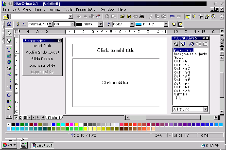

Next:
StarDraw: Creador de dibujos
Up:
StarOffice
Previous:
Análisis de tendencia.
Índice General
StarImpress: Creador y Visualizador de Presentaciones
Figura 5.41:
Presentaciones en StarOffice

Proyecto Cursos - LuCAS - http://lucas.hispalinux.es/htmls/cursos.html